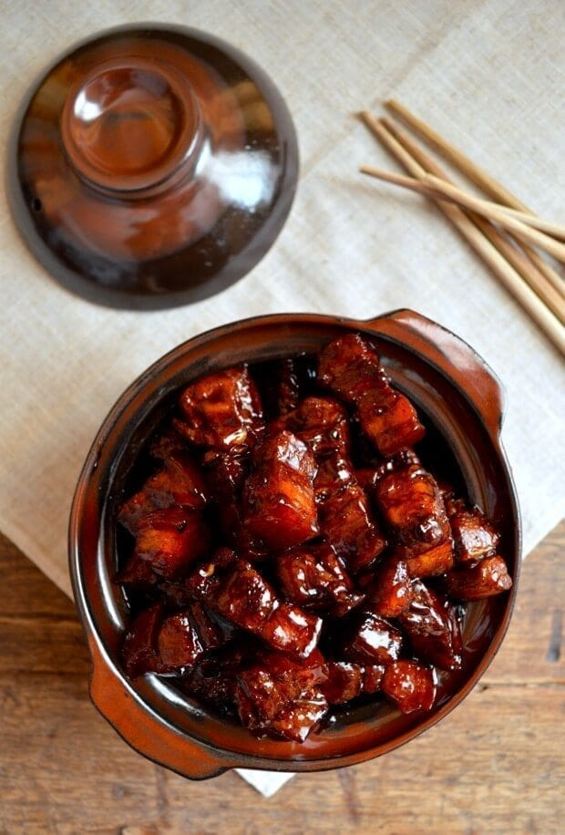

Shanghai Braised Pork Belly (Hong Shao Rou)

Description
Red Braised Pork Belly, or also known as "Hong Shao Rou" in mandarin.
This is the infamous dish that originated from Shanghai. A deliciously braised bork belly that has been simmering
for over an hour to get the juicy, soft and tender texture of the meat. Also, coated in a sweet
yet spicy sauce that goes great over rice (or even just by itself!). In this recipe, I will show
you how you can make this mouth watering dish that will impress your friends and family. Lets begin!
To make this famous breakfast dish, you will need only a few simple ingredients:
Ingredients
- 2 lb. pork belly
- 1 tsp salt
- 1 tbsp rock sugar* (see note)
- 1 piece star anise
- 1 bay leaf
- A few slices of ginger
- 1 tbsp of light and dark soy sauce
- 1 dried chili
- 1 scallion
- 2 cups of water
Step-by-step instructions:
- Start a pot of boiling water, add ginger and scallions to the boiling water. Boil pork belly for 10 mins and skim off any scum (blood) from the top of the surface of the water. This will help remove an impurities that gives the meat a bitter/gamey flavor
- After straining the pork belly out of the water, heat up a wok or pot. Add oil and slowly melt the rock sugar
until it is completely dissolved. Add back in the pork belly and let it sear. Be careful not to cook it too much because we will braise the meat later.
- Next, add in the light and dark soy sauce. The dark soy sauce doesn't make it salty, but adds a nice caramel note and has a rich, dark color.
- Throw in the bay leaf, star anise, and dried chili. Add a the 2 cups of boiling water and cover with a lid and let it braise on medium low for 25-30 mins.
- Lastly, to get that glossy texture and help the sauce adhere to the meat, remove the lid and turn up the heat. Keep a close eye on it as once the liquid is cooked down, the sauce will thicken and the sugars will make it nice and stick.
- --optional-- You can garnish with more chopped scallions on top